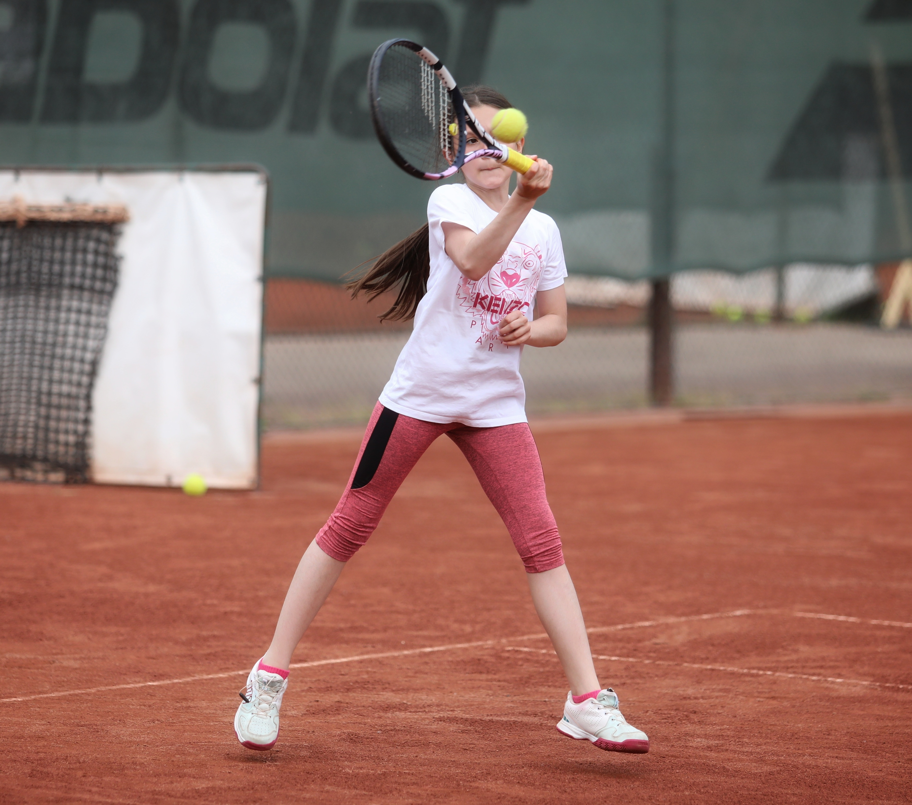
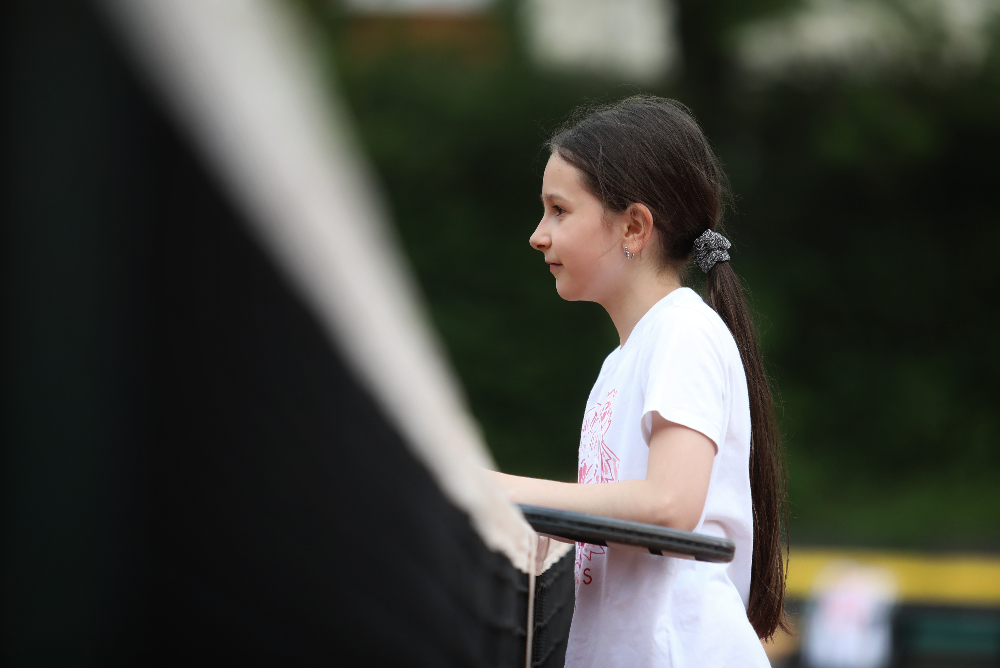
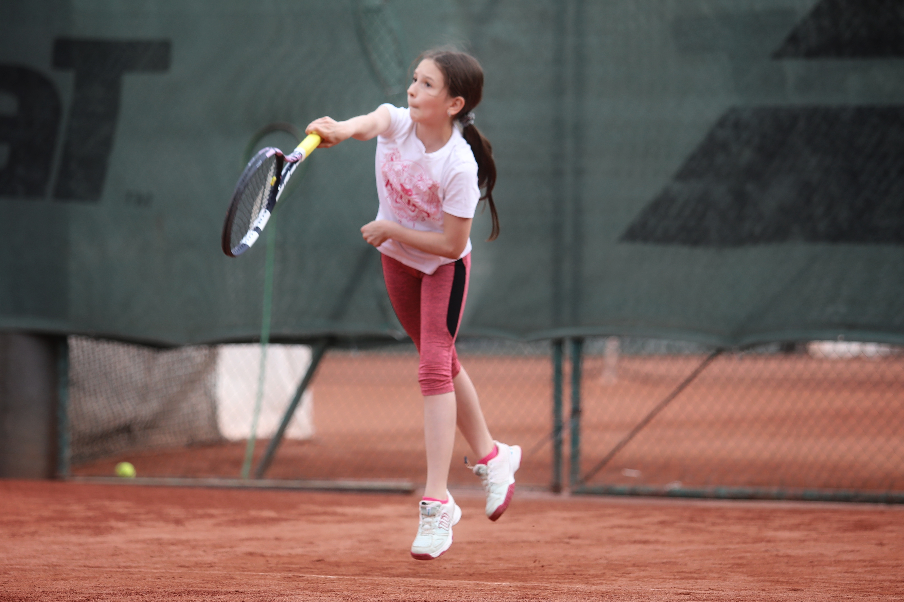

Olivia is very energetic and has tried many sports and forms of exercise. She was introduced to tennis at the age of 6 when her father - who is a tennis fan and senior ITF tennis player -, took her to a coach friend who thought she had talent and taught her the basics of this exciting game.

Olivia has already learned the technical and tactical elements of the game using the Play and Stay methodology. At the DEAC, a renowned youth development club in Debrecen, under coach Lajos Tóth.
After that, she continued her Play and Stay training at the Golden Ace Tennis Club in Budapest, under the guidance of coach Tamás Valkusz, the father and coach of multiple Hungarian Davis Cup team member Máté Valkusz.
In March 2020, she was given the opportunity to further develop her tennis game at MTK, Hungary's most prestigious tennis club. Here, she will be assisted by coaches who have worked with the highest ranked Hungarian tennis players, such as multiple Grand Slam women's doubles winner Tímea Babos (WTA ranking doubles: 91, Career high: Nr. 1 in doubles), or Márton Fucsovics (ATP ranking singles: 98, Career high: 31 in 2019).

MTK has an excellent and internationally recognised professional staff, several tennis coaches, trainers, physiotherapists, sport psychologists to support the athletes and to prepare them for competitons. MTK has also excellent tennis courts and facilities.

Olivia regularly competes in the official junior tournaments of the Hungarian Tennis Federation, as well as the Decahtlon Cup tennis tournament sponsored by the French sports retailer Decathlon, where last year she reached the final of the 8 best players invited. She will soon make her debut in ITF’s international junior circuit tennis tournaments.
A preparation to participate in the annual programme for young players of the Rafa Nadal Academy in Manacor, Mallorca is in the pipeline. The aim of this programme is to maximise the potential of the players at a high-performance centre where they can combine their tennis activities with excellence in their studies. Plans in the short term: membership of the U12 national junior national team, being in top 10 in the national rankings, successful international tournaments. Long term plans: becoming a professional tennis player.